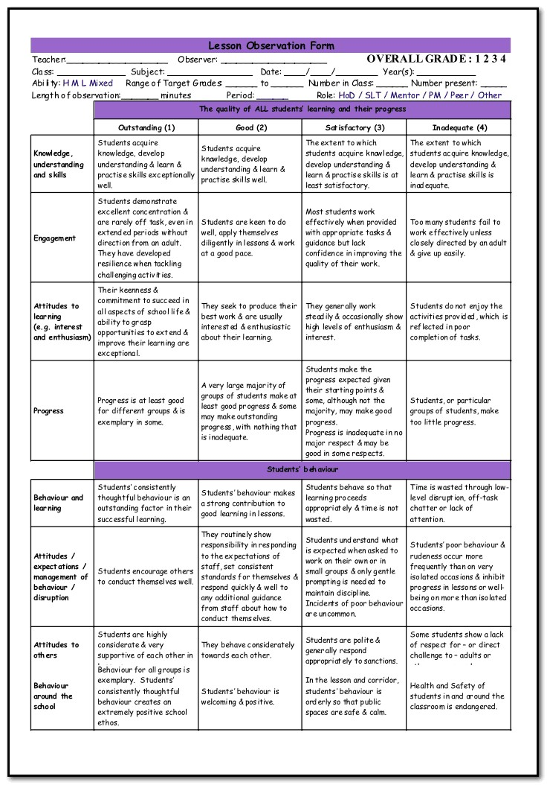

Observation Criteria
It is essential that schools use the correct observation criteria when grading lessons.
The Teacher Toolkit provides a checklist that helps observations become more accurate:

This is also a valuable tool when planning your lessons, as you can make sure your lesson has all the features expected to make it outstanding.